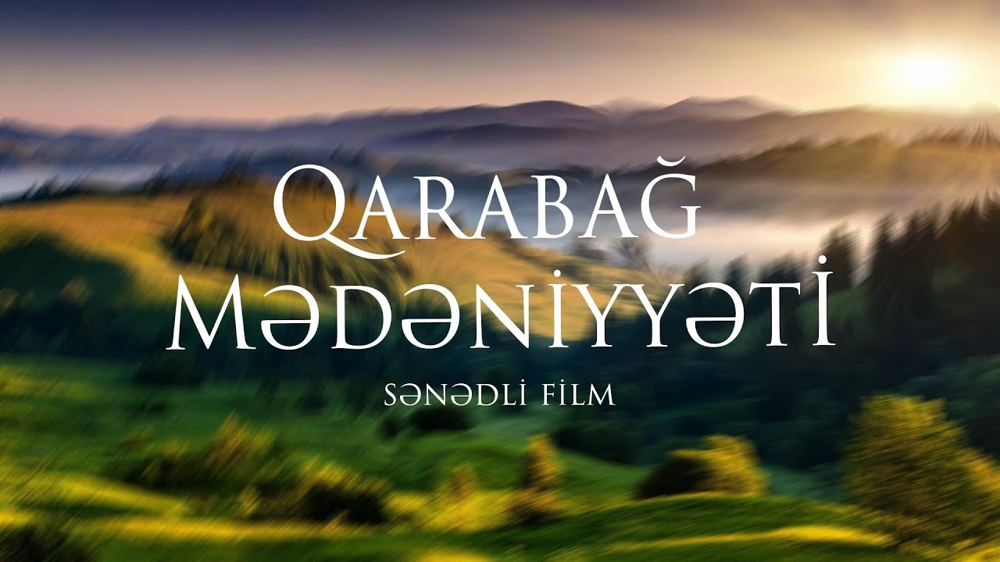
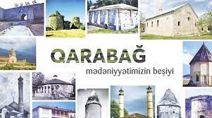
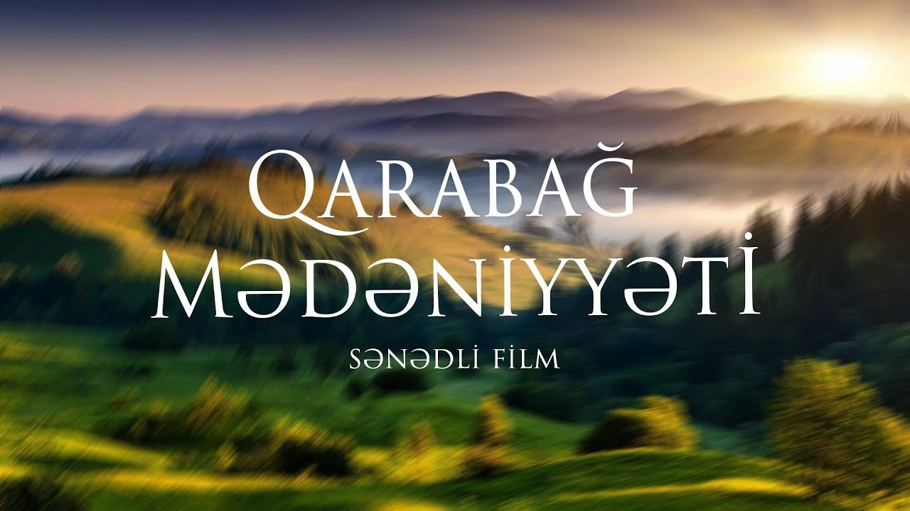
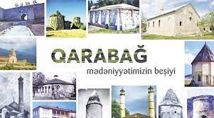

Qarabağ mədəniyyəti
Qarabağ bölgəsi nəinki, Azərbaycanın, həmçinin dünya ölkələrinin bir çox bölgələrindən fərqli olaraq daha qədim tarixə malik olan bir ərazidir. Məhz, Qarabağ bölgəsi özünün tarixi, maddi-mədəniyyət abidələri, zəngin ədəbiyyatı, incəsənəti və musiqi mədəniyyəti ilə zəngindir. Qarabağın bədii təfəkkür və yaradıcılığına bölgənin gözəl təbiəti, iqlimi, təbii sərvətlərinin zənginliyi də böyük təsir göstərmişdir. Qarabağlıların zəngin yaradıcılıq çeşməsində ən mühüm yerlərdən birini onun həyat və məişəti, gündəlik güzəranı ilə bağlı olan xalq sənətləri tutur. Təbiidir ki, qarabağlıların məişət xüsusiyyətləri, estetik zövqü, bir sözlə milli siması, mənliyi bu sənət növündə özünü xüsusilə parlaq şəkildə büruzə verəcəkdi. Əbəs yerə olmayaraq indi dünyanın ən zəngin muzeylərində Qarabağ xalq sənətkarlığının timsalında Azərbaycan xalq sənətkarlığının bir çox gözəl nümunələri ilə rastlaşmaq olur. Londonun Viktoriya və Albert, Parisin Luvr, Vaşinqtonun Metropoliten, Vyananın, Romanın, Berlinin, İstambulun, Tehranın, Qahirənin zəngin muzey kolleksiyalarına baxarkən orada Qarabağ ustalarının bacarıqlı əlləri ilə yaradılmış sənət nümunələrini görmək olar. Qarabağlıların əməyi sayəsində yaranıb bölgənin həyat və məişətində geniş istifadə edilən Qarabağ el sənətinin böyük və zəngin bir tarixi var. Qarabağdan tapılmış qab-qacaq, silah və bəzək nümunələri tək bir tarixi fakt kimi deyil, həm də onu yaradan sənətkarın ustalıq bacarığından məlumat verən qiymətli mənbədir. Metaldan düzəldilmiş sənət nümunələri içərisində elələri vardır ki, onların üzərində olan bəzək və təsvirlərlə biz o dövrdəki insanların adət-ənənələri, dini görüşləri və hətta geyimləri ilə yaxından tanış ola bilərik. Qarabağ xalq yaradıcılığının tarixi, etnoqrafik və bədii xusüsiyyətləri öz əksini geyimlərdə tapır. Bu xüsusiyyət həm müəyyən formalı geyim və onun bəzəklərində və həm də bədii tikmə, toxuma və toxuculuqda özünü büruzə verir. Arxeoloji qazıntılar vasitəsilə külli miqdarda qədim maddi mədəniyyət nümunələrinin aşkar edilməsi Qarabağın maddi və mənəvi mədəniyyət tarixini öyrənməyə imkan vermişdir. Təsadifi deyil ki, qədim və zəngin tarixə malik Azərbaycan xalqına məsxsus olan bu bölgə dünyanın bir sıra alimləri tərəfindən maraqla qəbul edildiyi kimi, eyni zamanda bu ulu diyarın tarixinə saxta yollarla sahiblənmək istəyən avantürüstlərin də diqqətindən yayınmamışdır. Qarabağdan aşkar edilmiş hər bir arxeoloji material, başqa sözlə maddi mədəniyyət nümunəsi olan irili-xırdalı bütün əşyalar – tikinti materialları, məişət əşyaları, süfrə qab-qacaqları, bəzək əşyaları hər biri həm özünün istehsal olunması baxımından, həm də onların üzərindəki müxtəlif qliptik, teoreftik təsvirlərin, naxışların həkk olunması baxımından qarabağlıarın həyatında özünə yer tutan qədim mədəniyyətin xarakterik cəhətləri, səviyyəsi, inkişaf xüsusiyyətlərinin təcəssümüdür. Misdən, tuncdan, qızıldan düzəldilmiş ev avadanlığının və zinət əşyalarının üzərinə həkk olunmuş müxtəlif rəsmlər Qarabağda hələ qədim zamanlarda təsviri sənətin mövcud olduğunu sübut edir. Müxtəlif dövrlərdə Azərbaycanın Qarabağ xalçaçılıq məktəbində toxunulmuş xalçalar bu günədək öz gözəlliyi ilə insanları valeh edir. Onların bir çoxu dünyanın məşhur muzeylərində mühafizə olunur. Zəngin mədəni irsə malik olan Qarabağ bölgəsi musiqi, muğam diyarı kimi də məşhurdur. Azərbaycan musiqi mədəniyyəti xəzinəsini öz nadir inciləri ilə zənginləşdirən Qarabağ musiqisinin çoxəsrlik ənənələri vardır. Qarabağ musiqi sənətində muğamlar, xalq mahnıları, rəqslər, aşıq yaradıcılığı da özünəməxsus yer tutur. Təsadüfi deyildir ki, Qarabağ milli musiqisinin təməl daşı, onun bünövrəsini muğamlar təşkil edir Qarabağlı ədəbiyyat nümayəndələrinin yaratdıqları ədəbi əsərlər Azərbaycan mədəniyyəti xəzinəsində özünəməxsus şərəfli yer tutur. Müxtəlif dövrlərdə Qarabağ xalçaçılıq məktəbində toxunulmuş xalçalar bu günədək öz gözəlliyi ilə insanları valeh edir. Onların bir çoxu dünyanın məşhur muzeylərində mühafizə olunur. Qarabağda teatr sənətinin kökləri xalqın fəaliyyəti, məişəti, şənlik və toy ənənələri, həmçinin dünyagörüşü ilə bağlıdır. Mərasim, ayin və oyunlardakı tamaşa elementləri müstəqil xalq teatrının yaranmasında mühüm rol oynamışdır. Qarabağ xalq teatrı realist özəllik daşımış və əməkçi təbəqələrlə bağlı olmuşdur. Xalq teatrının repertuarını müəyyən etik məzmunlu kiçik tamaşalar təşkil etmişdir. Qarabağ professional teatrının təşəkkülündə xalq teatrı əhəmiyyətli rol oynamışdır. Bunun sayəsində XIX əsrdən başlayaraq əvvəl Şuşada sonra Ağdamda professional teatr yaranmış və çox səmərəli fəaliyyət göstərmişdir. Qarabağın zəngin dəmir fılizi yataqları qədim zamanlardan başlayaraq yerli xammal əsasında dəmirçilik sənətinin meydana gəlməsində mühüm rol oynamışdır. Dulusçuluq isə Qarabağda sənətkarlıq istehsalının ən qədim sahələrindən olub bu günə qədər öz əhəmiyyətini saxlamışdır. Mütəxəssislər sənətin bu sahəsinin meydana çıxmasını neolit dövrünə aid edirlər. Qarabağ mətbəxi Qarabağ kətəsi, Bərdə nanı kimi spesifik xörəkləri ilə fərqlənməklə Azərbaycan kulinariyasının əsas hissəsini təşkil edir. Ərazidə aparılmış arxeoloji qazıntıların nəticələri göstərmişdir ki, Qarabağda yaşamış qədim insanlar tarix boyu şərəfli yaradıcılıq yolu keçərək çoxsaylı mədəniyyət əsərləri yaratmışlar və onlardan biri də memarlıqdır. Öz köklərilə ta qədim dövrlərə gedib çıxan Qarabağ təsviri sənət ənənələri özündə neçə-neçə nəsillərin bədii təcrübəsini yığıb saxlamışdır. Buraya Kəlbəcər, Ağdam, Laçın rayonlarındakı qayaüstü rəsmlər, zəngin bəzəyə malik əmək alətləri və məişət əşyaları, öz gözəlliyi və rəngarəngliyilə nadir olan xalçaçılıq sənəti, zərgərlik əşyaları və s. daxildir. Həmçinin öz nəfisliyi və zərifliyi ilə seçilən memarlıq abidələrini–məscidləri, məqbərələri, sarayları, kilsələri, məbədləri və kaşı naxışlarını da xatırlamamaq mümkün deyil. Bütün bunlar Azərbaycan xalqının bədii mədəniyyətinin özünəməxsus «genofond»unu yaratmış, onun zəngin irsini təşkil etmişdir. Həmin irs XIX əsrin ortalarından yeni tendensiyalarla daha da dolğunlaşmışdır. Bu dövrün əsas nümayəndələri kimi istedadlı fırça ustaları Mir Mövsüm Nəvvab, şair və rəssam Xurşudbanu Natəvan və bir çox digərləri çıxış edirdi. Öz zənginliyinə və öz unikallığına görə Qarabağ mədəniyyəti Azərbaycan mədəniyyətinin aparıcı və ayrılmaz tərkib hissəsi olmuşdur və olacaqdır.
 


